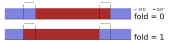

<h1 style="font-size: 3.5em">Working With Time Zones</h1> <br/> <h2 style="font-size: 2.5em">Everything You Wish You Didn't Need to Know</h2> <h2 style="font-size: 2.5em">(<tt>zoneinfo</tt> Edition)</h2> <br/> <br/> <br/> <span style="font-size: 2.5em"> Paul Ganssle </span> <br/> <br/> <img src="images/pganssle-logos.svg" height="40px" alt="@pganssle"> <br/> <br/> <span style="font-size: 1em;"><em>This talk on Github: <a href="https://github.com/pganssle-talks/pycon-us-2023-timezones">pganssle-talks/pycon-us-2023-timezones</a></em> </span> <br/> <a rel="license" href="https://creativecommons.org/publicdomain/zero/1.0/"> <img src="external-images/logos/cc-zero.svg" height="45px"> </a> <br/> Notes: Four years ago, I came to PyCon and gave a talk called Working with Time Zones: Everything You Wish You Didn't Need to Know. That same year, I gave a talk at the language summit called "Time Zones in the Standard Library", where I proposed adding a new time zone provider into the standard library, which eventually led to the creation of the `zoneinfo` module, mostly but not completely obsoleting my old talk. So this year I decided for the second edition of my time zone talk. OK, so we've got a lot to cover and only 30 minutes to cover it in, so let's jump right in with the basics of time zones! (30s)
# Introduction ## UTC - Reference time zone - Monotonic-ish (what's a few leap seconds between friends?) <br/> <br/> ## Time zones vs. Offsets <!-- .element: class="fragment" data-fragment-index="1" --> <ul class="fragment" data-fragment-index="1"> <li><tt>UTC-6</tt> is an offset</li> <li><tt>America/Chicago</tt> is a time zone</tt></li> <li><tt>CST</tt> is a highly context-dependent abbreviation: <ul> <li>Central Standard Time (<tt>UTC-6</tt>)</li> <li>Cuba Standard Time (<tt>UTC-5</tt>)</li> <li>China Standard Time (<tt>UTC+8</tt>)</li> </ul> </li> <ul> Notes: We can start out easy, with UTC. UTC is the reference time zone, it's the 0 against which offsets are measured. It is mostly monotonic — which is to say that it doesn't have daylight saving time. It still has leap seconds, which is infuriating, since leap seconds don't belong in civil time *at all*, much less in the reference time zone, but there has recently been talk of ending the practice of leap seconds, so hopefully, going forward, UTC will actually record 1 second per second of elapsed time. Another concept that is important to know is the difference between time zones and offsets. UTC-6 is an offset. It means that you should add 6 hours to the local time to get a time in UTC. `America/Chicago` is a time zone - it's a set of rules for what offsets and abbreviations apply in a given region as a function of time. `CST`, which is the abbreviation for the offset that applies in Chicago right now, is a highly context-dependent abbreviation referring to an offset. In our context, it means Central Standard Time, but if you're in Cuba, it refers to Cuba Standard Time, and if you're in China, it refers to China standard time. Word of advice: never rely on these 3-letter abbreviations. Don't rely on them meaning a specific thing, and don't even rely on every zone having an associated 3-letter abbreviation. [1m 15s; T: 1m 45s]
# Complicated time zones ## Non-integer offsets - `Australia/Adelaide` (+09:30) - `Asia/Kathmandu` (+05:45) - `Africa/Monrovia` (+00:44:30) (Before 1979) <br/><br/> ## Change of DST status without offset change <!-- .element: class="fragment" data-fragment-index="1" --> <ul class="fragment" data-fragment-index="1"> <li> Portugal, 1992 <ul> <li><tt>WET (+0 STD) → WEST (+1 DST) 1992-03-29</tt></li> <li><tt>WEST (+1 DST) → CET (+1 STD) 1992-09-27</tt><br/></li> </ul> </li> <li> Portugal, 1996 <ul> <li><tt>CET (+1 STD) -> WEST (+1 DST) 1996-03-31</tt></li> <li><tt>WEST (+1 DST) -> WET (+0 STD) 1996-10-27</tt></li> </ul> </ul> Notes: Now that we've got the basics down, let's move into the mandatory part of any time zone talk where the presenter tells you about all the weird and scandalous stuff people get up to with their local timekeeping. You may have a friend — it's OK, I know you are asking for a friend — who thinks that there are only 24 time zones, and that they are all 1-hour increments away from UTC, but if you go to Australia or India, you'll find time zones that are at half-hour offsets, and if you go to Nepal, you'll find they even have one with a 15-minute offset. And if you look at historical data, like in Liberia before 1979, there are offsets that aren't even a whole number of *minutes* away from UTC. Your friend may also think that the only time that the only time UTC offsets will change is during a daylight saving time change and vice versa — that the offset always changes when DST status changes, but in Portugal in 1992, they decided they didn't want to be on Western European Time anymore, but they wanted to join the UTC+1 time zone, Central European Time, so they decided they wanted to shift their base offset by 1 hour, and they decided to do this when Daylight Saving Time was schedule to end *anyway*, so that basically DST ended, but the clocks didn't change. This is very convenient for humans, but it also breaks anyone whose code relies on Daylight Saving Time transitions always corresponding to a change in offset. As an aside, in 1996 they decided that having the sun set after midnight in the summer was not a good idea, so they did the same thing in reverse. [2m 15s; T: 4:00] -- # Complicated time zones <br/> ## More than one DST transition per year <ul> <li> Morroco, 2012 <ul> <li><tt>WET (+0 STD) -> WEST (+1 DST) 2012-04-29</tt></li> <li><tt>WEST (+1 DST) -> WET (+0 STD) 2012-07-20</tt></li> <li><tt>WET (+0 STD) -> WEST (+1 DST) 2012-08-20</tt></li> <li><tt>WEST (+1 DST) -> WET (+0 STD) 2012-09-30</tt></li> </ul> </li> </ul> <br/> <br/> <span >... and Morocco in 2013-present, and Egypt in 2010 and 2014, and Palestine in 2011.</span> Notes: So now we know a couple of things that can happen, and you may think, "OK, the only things that can happen are changes to the base offset and daylight saving time, which will just be two transitions a year." But, not so fast — in Morocco in most years since 2012, there have been *two* daylight saving time transitions. For example here in 2012 they went on to summer time in April, then in July they went back to standard time for 1 month, then back onto summer time. Seems like a kind of weird thing to do until you realize that Morocco is a majority Muslim country, and in 2012 this month was the month of Ramadan, when Muslims aren't supposed to eat anything before sundown. All of a sudden that extra hour before sunset isn't looking too good, so they just go back to standard time. [1m; T: 5m] -- # Complicated time zones <br/> ## Missing days * Christmas Island (Kiritimati), December 31, 1994 (`UTC-10 → UTC+14`) ```python >>> dt_before = datetime(1994, 12, 30, 23, 59, tzinfo=ZoneInfo('Pacific/Kiritimati')) >>> dt_after = add_absolute(dt_before, timedelta(minutes=2)) >>> print(dt_before) 1994-12-30 23:59:00-10:00 >>> print(dt_after) 1995-01-01 00:01:00+14:00 ``` <br/> <br/> Also Samoa on January 29, 2011. Notes: OK, so we know there can be all kinds of weird stuff around daylight saving time transitions, but at least we can feel confident that these things always happen at like 2 in the morning, we're never going to see some discontinuity in the middle of the day, but alas even this is not true. In 1994, Christmas Island, which is part of Kiribati (prounounced kee-ree-bahs), which is an island in the South Pacific, decided that they wanted to be on the other side of the international dateline. Presumably this was something to do with aligning their timekeeping more closely with one of their trading partners or something, but the upshot of it was that they decided that they were going to just not have a December 31st in 1994. They would just go December 30th 11:159 then one minute later Happy New Year! And you may so, "Oh well that's just something that happens in the far past, it was the 90s, we were inventing programming languages and watching Seinfeld, that couldn't happen *today*, could it? But just a bit over a decade ago, the same thing happened in Samoa in 2011. [1m 15s; T: 6m15s] -- # Complicated time zones <br/> ## Double days <br/> * Kwajalein Atoll, 1969 ```python >>> dt_before = datetime(1969, 9, 30, 11, 59, tzinfo=ZoneInfo('Pacific/Kwajalein')) >>> dt_after = add_absolute(dt_before, timedelta(minutes=2)) >>> print(dt_before) 1969-09-30 11:59:00+11:00 >>> print(dt_after) 1969-09-30 12:01:00+11:00 ``` <br/> <br/> Notes: And historically, some places have gone the other way as well. In Kwajalein Atoll in 1969, there were two September 30ths! OK so maybe you say, "Ok, daylight saving time transitions can happen at any time, and there can be millions of them, and any sort of chaos can happen about offset changes, but at least I can count on one thing — if I know someone's location, I know what time zone they're in." But I think you can see where this is going... [15s; T: 6m30s] -- <!-- .slide: data-transition="slide-in none" --> <h2 style="margin-top: 0.5em; font-family: monospace">Asia/Shanghai</h2>  <!-- .element: id="splash-noborder" --> Notes: OK so maybe you say, "Ok, daylight saving time transitions can happen at any time, and there can be millions of them, and any sort of chaos can happen about offset changes, but at least I can count on one thing — if I know someone's location, I know what time zone they're in." But I think you can see where this is going... In China, they decided it would be a great idea for there to be one time zone for the entire country. This is normally a country that would span 3 or 4 time zones, but administratively I guess it's easier to use UTC+8 everywhere, which I guess is great in Beijing, but in Xinjiang (pronounced: shin-jee-ang) which is far to the West, the sun rises at around 4:30AM, which is not great, so while the trains and the post offices and government offices all use UTC+8, the locals effectively observe UTC+6. And according to Wikipedia, the main difference of who chooses which time zone is whether you are part of the Uyghyur (pronounced: wee-gurr) minority or Han majority, so in a sense this is actually a racial time zone, so I suppose if you know someone's location and their ethnicity then you can know their time zone.... [1m15s; 7m45s] -- <!-- .slide: data-transition="none slide-out" --> <h2 style="margin-top: 0.5em; font-family: monospace">Asia/Urumqi</h2>  <!-- .element: id="splash-noborder" --> Notes: In China, they decided it would be a great idea for there to be one time zone for the entire country. This is normally a country that would span 3 or 4 time zones, but administratively I guess it's easier to use UTC+8 everywhere, which I guess is great in Beijing, but in Xinjiang (pronounced: shin-jee-ang) which is far to the West, the sun rises at around 4:30AM, which is not great, so while the trains and the post offices and government offices all use UTC+8, the locals effectively observe UTC+6. And according to Wikipedia, the main difference of who chooses which time zone is whether you are part of the Uyghyur (pronounced: wee-gurr) minority or Han majority, so in a sense this is actually a racial time zone, so I suppose if you know someone's location and their ethnicity then you can know their time zone.... [1m15s; 7m45s]
# Why do we need to work with time zones at all? <br/> ```python from dateutil import rrule as rr from datetime import datetime, timezone from zoneinfo import ZoneInfo # Close of business in New York on weekdays closing_times = rr.rrule(freq=rr.DAILY, byweekday=(rr.MO, rr.TU, rr.WE, rr.TH, rr.FR), byhour=17, dtstart=datetime(2023, 3, 8, 17), count=5) NYC = ZoneInfo("America/New_York") for dt in closing_times: print(dt.replace(tzinfo=NYC)) ``` <pre style="margin-top: 0.5em"> 2023-03-08 17:00:00-05:00 2023-03-09 17:00:00-05:00 2023-03-10 17:00:00<b>-05:00</b> 2023-03-13 17:00:00<b>-04:00</b> 2023-03-14 17:00:00-04:00 </pre> <br/> ```python # Get close of business in UTC for dt in closing_times: print(dt.replace(tzinfo=NYC).astimezone(timezone.utc)) ``` <pre style="margin-top: 0.5em"> 2023-03-08 22:00:00+00:00 2023-03-09 22:00:00+00:00 2023-03-10 <b>22:00:00</b>+00:00 2023-03-13 <b>21:00:00</b>+00:00 2023-03-14 21:00:00+00:00 <pre> -- <div style="font-size: 3rem;"> When storing datetimes where the <em>wall time</em> matters (e.g. meetings), you must store local time, because the mapping between UTC and local time is <em>not stable</em>.</div> -- <!-- .slide: data-visibility="hidden" --> <p style="text-align: center"> </p> <p style="text-align: center"> </p> <span><em>Further Reading:</em> <a href="https://codeofmatt.com/on-the-timing-of-time-zone-changes/">On the Timing of Time Zone Changes</a>, <a href="https://codeofmatt.com/time-zone-chaos-inevitable-in-egypt/">Time Zone Chaos Inevitable in Egypt</a></span>
# Python's Time Zone Model: `tzinfo` <br/> * Time zones are provided by *subclassing* `tzinfo`. <div style="height: 0.25em"></div> * Information provided is a function of the datetime: <div style="height: 0.25em"></div> * `tzname`: The (usually abbreviated) name of the time zone at the given datetime * `utcoffset`: The offset from UTC at the given datetime * <span class="fragment disappearing-fragment nospace-fragment fade-out" data-fragment-index="1">`dst`: The size of the `datetime`'s DST offset (usually 0 or 1 hour)</span><span class="fragment nospace-fragment" data-fragment-index="1" style="color: #b70000"><strike>`dst`: The size of the `datetime`'s DST offset (usually 0 or 1 hour)</strike></span> Notes: So now that we've established that you actually need to *ugh* understand the abstractions you are working with, let's get into some of the details of how it works in Python. Python's time zone model is based around an abstract base class `tzinfo`. The idea is that each time zone object provides three functions that take the `datetime` as an argument. There's `tzname`, which gives the name of the zone at the given datetime, `utcoffset`, which does most of the heavy lifting here, this gives the offset that applies at the relevant datetime, and then `dst`, which gives you the difference between the current offset and standard time. I think basically every time I've seen someone use the `dst` method it was something that I would consider a mistake, so basically never use that last one.
# History of Python's Time Zones When `datetime` was introduced in [Python 2.3](https://docs.python.org/3/whatsnew/2.3.html#date-time-type), there were *no* concrete time zones in the standard library. <div class="small-spacer"></div> ```python from dateutil import relativedelta as rd # Cheating... class ET(tzinfo): def utcoffset(self, dt): if self.isdaylight(dt): return timedelta(hours=-4) else: return timedelta(hours=-5) def dst(self, dt): if self.isdaylight(dt): return timedelta(hours=1) else: return timedelta(hours=0) def tzname(self, dt): return "EDT" if self.isdaylight(dt) else "EST" def isdaylight(self, dt): dst_start = datetime(dt.year, 1, 1) + rd.relativedelta(month=3, weekday=rd.SU(+2), hour=2) dst_end = datetime(dt.year, 1, 1) + rd.relativedelta(month=11, weekday=rd.SU, hour=2) return dst_start <= dt.replace(tzinfo=None) < dst_end ``` -- # History of Python's Time Zones: Concrete Time Zones - UTC / Fixed Offsets <span class="fragment" style="color: green" data-fragment-index="1">✔ Added in 3.2</span> - Local time - IANA Time Zones <p style="text-align: center"> <img src="images/whatsnew3.2.png" alt="What's new in Python 3.2 excerpt" class="fragment" data-fragment-index="1" /> </p> -- <!-- .slide: data-visibility="hidden" --> # History of Python's Time Zones: Ambiguous time problem ```python EASTERN = ET() print(datetime(2017, 11, 4, 12, 0, tzinfo=EASTERN)) print(datetime(2017, 11, 5, 12, 0, tzinfo=EASTERN)) ``` ``` 2017-11-04 12:00:00-04:00 2017-11-05 12:00:00-05:00 ``` <br/><br/> ```python dt_before_utc = datetime(2017, 11, 5, 0, 30, tzinfo=EASTERN).astimezone(datetime.UTC) dt_during = (dt_before_utc + timedelta(hours=1)).astimezone(EASTERN) # 1:30 EDT dt_after = (dt_before_utc + timedelta(hours=2)).astimezone(EASTERN) # 1:30 EST print(dt_during) # Lookin good! print(dt_after) # OH NO! ``` ``` 2017-11-05 01:30:00-04:00 2017-11-05 02:30:00-05:00 ``` -- # Ambiguous times Ambiguous times are times where the same "wall time" occurs twice, such as during a DST to STD transition. <br/> ```python from dateutil import tz dt1 = datetime(2004, 10, 31, 4, 30, tzinfo=timezone.utc) for i in range(4): dt = (dt1 + timedelta(hours=i)).astimezone(NYC) print('{} | {} | {}'.format(dt, dt.tzname(), 'Ambiguous' if tz.datetime_ambiguous(dt) else 'Unambiguous')) ``` <br/> <pre> 2004-10-31 00:30:00-04:00 | EDT | Unambiguous 2004-10-31 01:30:00-04:00 | EDT | Ambiguous 2004-10-31 01:30:00-05:00 | EST | Ambiguous 2004-10-31 02:30:00-05:00 | EST | Unambiguous </pre> <br/> There can be multiple times in a time zone differentiated by their offset! -- # Imaginary times The complement of ambiguous times is imaginary times — wall times that don't exist in a given time zone, such as during an STD to DST transition. ```python dt1 = datetime(2004, 4, 4, 6, 30, tzinfo=timezone.utc) for i in range(3): dt = (dt1 + timedelta(hours=i)).astimezone(NYC) print(f'{dt} | {dt.tzname()} ') ``` <br/> <pre> 2004-04-04 01:30:00-05:00 | EST 2004-04-04 03:30:00-04:00 | EDT 2004-04-04 04:30:00-04:00 | EDT </pre> Notice the lack of a `2004-04-04 02:30:00`!
# `pytz`'s time zone model <br/> * `tzinfo` is attached *by the time zone object itself*: ```python >>> LOS_p = pytz.timezone('America/Los_Angeles') >>> dt = LOS_p.localize(datetime(2017, 8, 11, 14, 0)) >>> print_tzinfo(dt) 2017-08-11 14:00:00-0700 tzname: PDT; UTC Offset: -7.00h; DST: 1.0h ``` <br/> * `tzinfo`s are all *static offsets*: ```python >>> print(repr(LOS_p)) <DstTzInfo 'America/Los_Angeles' LMT-1 day, 16:07:00 STD> >>> print(repr(dt.tzinfo)) <DstTzInfo 'America/Los_Angeles' EDT-1 day, 20:00:00 DST> ``` <br/> * Python's model is designed to be lazy, but `pytz`'s model is *eager* -- # Handling ambiguous and imaginary times in `pytz` Because offsets are eagerly evaluated, it is possible to represent `datetime`s that differ only in their offset by attaching different offsets to them. `pytz`'s `is_dst` has three modes: <br/> - `is_dst=False` (default): choose the STD side if ambiguous ```python >>> ambiguous = datetime(2004, 10, 31, 1, 30) >>> print_tzinfo(LOS_p.localize(ambiguous, is_dst=False)) 2004-10-31 01:30:00-0500 tzname: EST; UTC Offset: -5.00h; DST: 0.0h ``` <br/> - `is_dst=True`: choose the DST side if ambiguous ```python >>> print_tzinfo(LOS_p.localize(ambiguous, is_dst=True)) 2004-10-31 01:30:00-0400 tzname: EDT; UTC Offset: -4.00h; DST: 1.0h ``` <br/> - `is_dst=None`: Throw an error if ambiguous ```python >>> LOS_p.localize(ambiguous, is_dst=None) AmbiguousTimeError Traceback (most recent call last) ... 362 if is_dst is None: --> 363 raise AmbiguousTimeError(dt) AmbiguousTimeError: 2004-10-31 01:30:00 ``` -- # Problems with `pytz`'s time zone model <br/> * Requires eager calculation — directly attaching a `pytz` timezone gives the wrong results: ``` >>> dt = datetime(2020, 5, 1, tzinfo=LOS_p) >>> print_tzinfo(dt) 2020-05-01 00:00:00-0753 tzname: LMT; UTC Offset: -7.88h; DST: 0.0h ``` <br/> * You must `normalize()` datetimes after you've done some arithmetic on them: <br/> ```python >>> dt = LOS_p.localize(datetime(2020, 5, 1)) >>> dt_add = dt + timedelta(days=180) >>> print_tzinfo(dt_add) 2018-02-07 14:00:00-0700 tzname: PDT; UTC Offset: -7.00h; DST: 1.0h >>> print_tzinfo(LOS_p.normalize(dt_add)) 2018-02-07 13:00:00-0800 tzname: PST; UTC Offset: -8.00h; DST: 0.0h ```
# PEP 495: Local Time Disambiguation * First introduced in Python 3.6 to solve the ambiguous time problem * Introduces the `fold` attribute of `datetime` * Changes to aware datetime comparison around ambiguous times <br/> <br/> Whether you are on the fold side is a *property of the datetime*: <br/> ```python >>> print_tzinfo(datetime(2004, 10, 31, 1, 30, tzinfo=NYC)) # fold=0 2004-10-31 01:30:00-0400 tzname: EDT; UTC Offset: -4.00h; DST: 1.0h >>> print_tzinfo(datetime(2004, 10, 31, 1, 30, fold=1, tzinfo=NYC)) 2004-10-31 01:30:00-0500 tzname: EST; UTC Offset: -5.00h; DST: 0.0h ``` <br/> **N.B.:** `fold=1` represents the *second* instance of an ambiguous datetime. -- <div style="text-align: center"> <h2 style="text-align: center"><tt>pytz</tt></h2> <img src="images/fold_pytz.svg" style="width: 80%" alt="A diagram of pytz's ambiguous time resolution model showing that is_dst changes the total amount of time where 'DST' label would be applied" /> <br/> <h2 style="text-align: center">PEP 495</h2>  </div>
# Concrete Time Zones: Local time - UTC / Fixed Offsets <span style="color: green">Added in 3.2</span> - Local time <span style="color: orange"><strong>○</strong> Basically supported in 3.6+</span> - IANA Time Zones <span class="fragment" style="color: red" data-fragment-index="1">✘ (as of Python 3.8)</span> <br/> <br/> Naïve datetimes are now considered system local times, and you can attach a fixed offset zone to them to probe time zone information: ```python >>> print(datetime(2023, 11, 4, 12).astimezone()) 2023-11-04 12:00:00-04:00 ``` ```python >>> print(datetime(2023, 11, 5, 12).astimezone()) 2023-11-05 12:00:00-05:00 ``` <br/> Setting `fold` on a naïve datetime works: ```python >>> print(datetime(2023, 11, 5, 1, fold=0).astimezone()) 2023-11-05 01:00:00-04:00 >>> print(datetime(2023, 11, 5, 1, fold=1).astimezone()) 2023-11-05 01:00:00-05:00 ``` <br/> See my blog posts: [Why naïve times are local times](https://blog.ganssle.io/articles/2022/04/naive-local-datetimes.html) and [Stop using utcnow and utcfromtimestamp](https://blog.ganssle.io/articles/2019/11/utcnow.html)
# data source: IANA Time Zones - Provides historical time zone information - Standard open source (public domain) source for time zone information - Shipped with many operating systems - Source for `dateutil` and `pytz`'s data. - 2-21 releases per year (average 9) <br/> <div style="text-align: center"> <img src="images/all_zones.png" alt="Map of IANA time zones"/> </div> -- # PEP 615: Support for the IANA Time Zone Database in the Standard Library <div style="text-align:center"> <img style="max-height:500px" src="images/zoneinfo-documentation.png" alt="A screenshot of Python 3.9's zoneinfo documentation."/> </div> - When the system has IANA time zone data available, it is used - Defaults to well-known deployment locations - Configurable in-program using `zoneinfo.reset_tzpath` - Configurable with environment variable `PYTHONTZPATH` - Default can be set at compile time - We also provide the `tzdata` package on PyPI — a "first party" data-only fallback library.
# A curious case... ```python >>> LON = ZoneInfo("Europe/London") >>> x = datetime(2007, 3, 25, 1, 0, tzinfo=LON) >>> ts = x.timestamp() >>> y = datetime.fromtimestamp(ts, LON) >>> z = datetime.fromtimestamp(ts, ZoneInfo.no_cache("Europe/London")) ``` <br/> ```python >>> x == y False ``` <!-- .element: class="fragment" --> <br/> ```python >>> x == z True ``` <!-- .element: class="fragment" --> <br/> ```python >>> y == z True ``` <!-- .element: class="fragment" --> -- # Hint `2007-03-25 01:00:00` is imaginary in London! ```python >>> print(x) # x (LON) 2007-03-25 01:00:00+01:00 >>> print(x.astimezone(timezone.utc)) # x (LON → UTC) 2007-03-25 00:00:00+00:00 >>> print(x.astimezone(timezone.utc). ... .astimezone(LON)) # x (LON → UTC → LON) 2007-03-25 00:00:00+00:00 ``` -- # What does equality mean? <div style="display:flex; flex-flow: row nowrap; justify-content: space-between; align-items: flex-start; padding: 1rem;"> <div style="flex-grow: 2"> <ol> <li>Wall time semantics: compare only naïve portions<br/> <table style="margin-top: 0.5em"> <tr> <td><tt>x == y</tt></td> <td><tt>False</tt></td> </tr> <tr> <td><tt>x == z</tt></td> <td><tt>False</tt></td> </tr> <tr> <td><tt>y == z</tt></td> <td><tt>True</tt></td> </tr> </table> <br/> </li> <li>Absolute time semantics: convert to UTC<br/> <table style="margin-top: 0.5em"> <tr> <td><tt>x == y</tt></td> <td><tt>True</tt></td> </tr> <tr> <td><tt>x == z</tt></td> <td><tt>True</tt></td> </tr> <tr> <td><tt>y == z</tt></td> <td><tt>True</tt></td> </tr> </table> </li> </ol> </div> <div style="border: 1px solid; padding-left: 5px; padding-right: 5px; background: #fff; align-items: flex-start"> <div class="fragment disappearing-fragment nospace-fragment fade-out" data-fragment-index="1"> <u>Wall Times:</u><br/> <tt> x: <b>2007-03-25 01:00:00</b>+01:00<br/><br/> y: <b>2007-03-25 00:00:00</b>+00:00<br/><br/> z: <b>2007-03-25 00:00:00</b>+00:00<br/><br/> </tt> </div> <div class = "fragment nospace-fragment fade-in " data-fragment-index="1"> <u>UTC:</u><br/> <tt> x: 2007-03-25 <b>00:00:00+00:00</b><br/><br/> y: 2007-03-25 <b>00:00:00+00:00</b><br/><br/> z: 2007-03-25 <b>00:00:00+00:00</b><br/><br/> </tt> </div> </div> </div> ## Another hint <!-- .element: class="fragment" data-fragment-index="2" --> ```python >>> x.tzinfo is y.tzinfo True ``` <!-- .element: class="fragment" data-fragment-index="2" --> ```python >>> x.tzinfo is z.tzinfo False ``` <!-- .element: class="fragment" data-fragment-index="2" --> -- # Semantics of aware datetime comparison: 1. When two `datetime`s are in the *same zone*, only the naïve portion is compared (wall time semantics). 2. When they are in *different zones*, both are converted to UTC first, then compared (absolute time semantics). 3. Two `datetime`s are in the "same zone" only if `dt1.tzinfo is dt2.tzinfo`. <br/> <br/> ## Mystery solved: <!-- .element: class="fragment" data-fragment-index="1" --> <div class="fragment" data-fragment-index="1" style="text-align:center"> <table> <tr> <td></td> <td>Wall</td> <td>Absolute</td> <td><tt>datetime</tt></td> </tr> <tr> <td><tt>x == y</tt></td> <td><b>False</b></td> <td>True</td> <td>False</td> </tr> <tr> <td><tt>x == z</tt></td> <td>False</td> <td><b>True</b></td> <td>True</td> </tr> <tr> <td><tt>y == z</tt></td> <td><b>True</b></td> <td>True</td> <td>True</td> </tr> </table> </div> -- # `zoneinfo`: Cache behavior Calls to the default constructor with identical arguments are guaranteed to return objects which compare as identical; specifically, the following must always be valid: ```python a = ZoneInfo(key) b = ZoneInfo(key) assert a is b ``` This is because `datetime` assumes that time zones are singletons, which would cause confusing results if we used a simpler implementation: ```python >>> from datetime import * >>> from simple_zoneinfo import SimpleZoneInfo >>> dt0 = datetime(2020, 3, 8, tzinfo=SimpleZoneInfo("America/New_York")) >>> dt1 = dt0 + timedelta(1) >>> dt2 = dt1.replace(tzinfo=SimpleZoneInfo("America/New_York")) >>> dt2 == dt1 True >>> print(dt2 - dt1) 0:00:00 >>> print(dt2 - dt0) 23:00:00 >>> print(dt1 - dt0) 1 day, 0:00:00 ``` See [PEP 615](https://www.python.org/dev/peps/pep-0615/) and [the documentation](https://docs.python.org/3/library/zoneinfo.html) for more information than you would ever want about working with the cache.
# Semantics of aware datetime arithmetic An analogous problem for comparison semantics is that addition across a DST boundary is not well-defined: ```python >>> NYC = ZoneInfo("America/New_York") >>> dt1 = datetime(2020, 3, 7, 13, tzinfo=NYC) >>> dt2 = d1 + timedelta(days=1) ``` <br/> <br/> Given that there is a DST transition between `dt1` and `dt2`, there are two options: ```python >>> print(wall_add(dt1, timedelta(days=1))) # Next calendar day at the same time 2020-03-08 13:00-04:00 >>> print(absolute_add(dt1, timedelta(days=1))) # 24 elapsed hours after dt1 2020-03-08 12:00-04:00 ``` -- # Semantics of aware datetime arithmetic Datetime always uses wall-time semantics when interacting with a `timedelta`: ```python >>> print(wall_add(dt1, timedelta(days=1))) 2020-03-08 13:00-04:00 >>> print(absolute_add(dt1, timedelta(days=1))) 2020-03-08 12:00-04:00 >>> print(dt1 + timedelta(days=1)) 2020-03-08 13:00-04:00 ``` When two `datetime`s are subtracted, the behavior is different for same-zone and different-zone subtractions: ``` >>> dt2 = datetime(2020, 3, 8, 13, tzinfo=NYC) >>> dt1_same = datetime(2020, 3, 7, 13, tzinfo=NYC) >>> dt1_different = dt1_same.astimezone(timezone.utc) # dt1_same == dt1_different! >>> print(dt2 - dt1_same) 1 day, 0:00:00 >>> print(dt2 - dt1_different) 23:00:00 ``` *See my blog post "Semantics of timezone-aware datetime arithmetic" (https://blog.ganssle.io/articles/2018/02/aware-datetime-arithmetic.html) for a more thorough analysis.* -- # Using `zoneinfo`: Absolute time semantics Many `pytz` users will be surprised by the "wall time" semantics of `datetime`. To deliberately use absolute time semantics, convert to UTC first: ```python def absolute_add(dt: datetime, td: timedelta) -> datetime: dt_utc = dt.astimezone(timezone.utc) rv_utc = dt_utc + td return rv_utc.astimezone(dt.tzinfo) def absolute_diff(dt1: datetime, dt2: datetime) -> timedelta: dt1_utc = dt1.astimezone(timezone.utc) dt2_utc = dt2.astimezone(timezone.utc) return dt1 - dt2 ```
# Benefits of `zoneinfo`? - Only major time zone library with year 2038 and slim tzdata support - It's *fast* (numbers from `backports.zoneinfo`'s benchmark suite): ``` Running constructor in zone America/New_York c_zoneinfo: mean: 214.65 ns ± 43.48 ns; min: 190.88 ns (k=5, N=1000000) pytz: mean: 1.21 µs ± 78.31 ns; min: 1.10 µs (k=5, N=200000) dateutil: mean: 1.33 µs ± 117.35 ns; min: 1.23 µs (k=5, N=200000) Running from_utc in zone America/New_York c_zoneinfo: mean: 658.55 ns ± 28.92 ns; min: 617.08 ns (k=5, N=500000) pytz: mean: 5.12 µs ± 515.26 ns; min: 4.70 µs (k=5, N=50000) dateutil: mean: 10.64 µs ± 746.99 ns; min: 10.20 µs (k=5, N=20000) Running to_utc in zone America/New_York c_zoneinfo: mean: 616.13 ns ± 16.14 ns; min: 604.76 ns (k=5, N=500000) pytz: mean: 848.44 ns ± 28.10 ns; min: 806.72 ns (k=5, N=500000) dateutil: mean: 8.03 µs ± 509.75 ns; min: 7.55 µs (k=5, N=50000) Running utcoffset in zone America/New_York c_zoneinfo: mean: 373.89 ns ± 5.76 ns; min: 368.24 ns (k=5, N=1000000) pytz: mean: 564.55 ns ± 13.65 ns; min: 552.88 ns (k=5, N=500000) dateutil: mean: 7.95 µs ± 642.62 ns; min: 7.44 µs (k=5, N=50000) ``` Because of the C backend, `zoneinfo` is faster than `pytz` and `dateutil` on every metric.
# Migrating from `pytz` If you have any public-facing interface that returns `pytz` timezones (or `datetimes` localized with `pytz`), it will be a **breaking change** to move away from `pytz`: ```python def pre_migration(): return pytz.timezone("America/New_York").localize(datetime(2020, 1, 1)) def post_migration(): return datetime(2020, 1, 1, tzinfo=ZoneInfo("America/New_York")) def sixty_days_later(dt: datetime) -> datetime: non_normalized_dt = dt + timedelta(days=60) return dt.tzinfo.normalize(non_normalized_dt) ``` <br/> ```python >>> sixty_days_later(pre_migration()) datetime.datetime(2020, 3, 1, 0, 0, tzinfo=<DstTzInfo 'America/New_York' EST-1 day, 19:00:00 STD>) >>> sixty_days_later(post_migration()) --------------------------------------------------------------------------- AttributeError Traceback (most recent call last) <ipython-input-7-b71365e0022f> in <module> ----> 1 sixty_days_later(post_migration()) <ipython-input-5-f165abf34e2a> in sixty_days_later(dt) 7 def sixty_days_later(dt: datetime) -> datetime: 8 non_normalized_dt = dt + timedelta(days=60) ----> 9 return dt.tzinfo.normalize(non_normalized_dt) AttributeError: 'zoneinfo.ZoneInfo' object has no attribute 'normalize' ``` -- # `pytz-deprecation-shim` [`pytz-deprecation-shim`](https://pytz-deprecation-shim.readthedocs.io/en/latest/) is a mostly backwards-compatible implementation of `pytz`'s interface that is *also* a thin wrapper around `zoneinfo`. It can be used exactly as a `zoneinfo.ZoneInfo` object would be: ```python >>> import pytz_deprecation_shim as pds >>> from datetime import datetime, timedelta >>> LA = pds.timezone("America/Los_Angeles") >>> dt = datetime(2020, 10, 31, 12, tzinfo=LA) >>> print(dt) 2020-10-31 12:00:00-07:00 >>> dt.tzname() 'PDT' ``` But also exposes `pytz`'s interface, raising a `DeprecationWarning` when `pytz`-specific features are used: ```python >>> dt = LA.localize(datetime(2020, 10, 31, 12)) <stdin>:1: PytzUsageWarning: The localize method is no longer necessary, as this time zone supports the fold attribute (PEP 495). For more details on migrating to a PEP 495-compliant implementation, see https://pytz-deprecation-shim.readthedocs.io/en/latest/migration.html >>> print(dt) 2020-10-31 12:00:00-07:00 >>> dt.tzname() 'PDT' ``` **Caution:** There are some changes in arithmetic semantics, see [the migration guide](https://pytz-deprecation-shim.readthedocs.io/en/latest/migration.html). -- <!-- .slide: data-visibility="hidden" --> # `pytz-deprecation-shim`: Helper functions - `pytz_deprecation_shim.wrap_zone(tz, key=...)`: Wrap an existing `zoneinfo` object in a shim object. <br/> - `pytz_deprecation_shim.is_pytz_zone(tz)`: Detect whether you have a `pytz` zone or not, without needing to be able to import `pytz`. <br/> - `pytz_deprecation_shim.upgrade_tzinfo(tz)`: - "Unwraps" a shim zone into the underlying `zoneinfo` or `dateutil.tz` (Python 2.7) implementation. - Turns a `pytz` zone into its `zoneinfo` / `dateutil.tz` equivalent (raises an exception if no equivalent exists) -- <!-- .slide: data-visibility="hidden" --> # `pytz-deprecation-shim`: Difference in arithmetic semantics It is not possible to make a shim time zone with the same arithmetic semantics as both `pytz` and `zoneinfo` `datetimes`: ```python def one_day_later(dt: datetime) -> datetime: next_day_non_normalized = dt + timedelta(days=1) return dt.tzinfo.normalize(next_day_non_normalized) ``` <br/> ```python >>> dt_pytz = pytz.timezone("America/New_York").localize(datetime(2020, 10, 31, 12)) >>> print(one_day_later(dt_pytz)) 2020-11-01 11:00:00-05:00 >>> dt_shim = pds.timezone("America/New_York").localize(datetime(2020, 10, 31, 12)) >>> print(one_day_later(dt_shim)) 2020-11-01 12:00:00-05:00 ``` Other than the deprecation warning, this will be a silent behavior change!
# Thank you <!-- .element: style="margin-top: 0.5em" -->